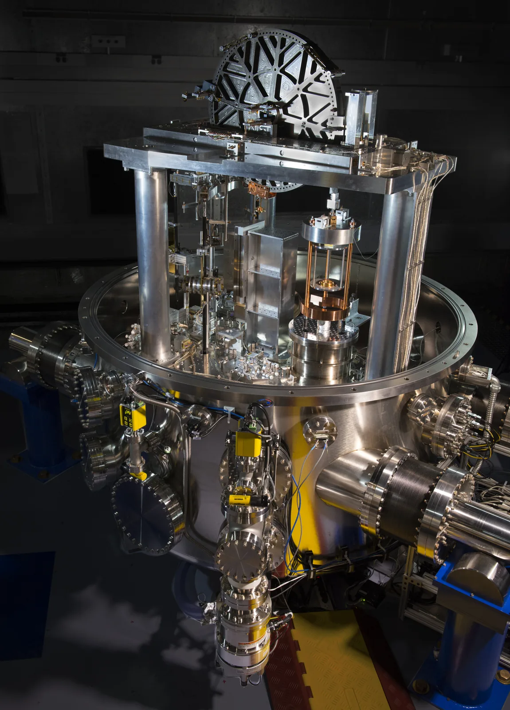

Suureet, yksiköt ja SI-järjestelmä
Miksi Voyager 2 -luotaimen etäisyys ilmoitetaan välillä kilometreinä, välillä astronomisina yksikköinä ja välillä valotunteina, vaikka kyse on yhdestä ja samasta matkasta?
Pohjatiedot
- Koot vaihtelevat Planckin pituudesta havaittavaan maailmankaikkeuteen yli kuudellakymmenellä kymmenpotenssillaluku Fysiikka tieteenä ja maailmankaikkeuden mittasuhteet
- Jokainen kymmenpotenssin askel kymmenkertaistaa pituuden tai pienentää sen kymmenesosaanluku Fysiikka tieteenä ja maailmankaikkeuden mittasuhteet
Ydinpolku: etene vaiheiden mukaan. Ydinpolkuun kuuluvat laskujen lisäksi tutkimukset, selitykset ja kuvaajat. Valinnainen-merkityt tehtävät tarjoavat lisäharjoittelua. Valinnaisia tehtäviä 5.
Pohdinta
NASAn Voyager 2 -luotain lähti matkaan vuonna 1977, ja se on ylittänyt heliopaussin eli aurinkotuulen puhaltaman kuplan rajan. Nyt se liikkuu tähtienvälisessä avaruudessa, vaikka on yhä Auringon painovoiman piirissä. Silti sen kanssa pidetään yhteyttä radiosignaaleilla. Luotaimen etäisyydestä kerrotaan välillä kilometreinä, välillä astronomisina yksikköinä ja välillä sillä ajalla, jonka signaali kulkee sen luota tänne.
Miksi sama etäisyys ilmoitetaan eri yksiköillä, ja mitä lukujen välillä pitää tehdä, jotta ne tarkoittavat samaa?
Valinnainen Kertaa: kymmenpotenssit
Ennusta
Tee ennusteet ennen tutkimista 2 kysymystä
Ennuste 1: signaali Voyager 2:lle
Ennuste 2: kauempana oleva luotain
Tutki
Simulaatio
Käyttöohje
Vieritä kuvaa vetämällä, hiiren pyörällä tai nuolinäppäimillä (Shift suurentaa askelta) tai nuolipainikkeilla: mitä pidempään painiketta pidät, sitä nopeammin kuva vierii. Liukusäädin siirtää näkymän etäisyydelle $d = 10^{n}\,\text{km}$ Auringosta, ja hyppypainikkeet vievät suoraan Aurinkoon, planeettaan tai Voyager 2:een. Matkusta valon nopeudella lähettää valopulssin näkymän keskikohdasta; Nopeus kertoo, millä moninkertaisella tahdilla aika kuluu (1-, 100- tai 10 000-kertainen), ja kulunut aika sekä kuljettu matka näkyvät luvuissa. Alusta palauttaa näkymän Aurinkoon. Kenttä Voyager 2 -päivä valitsee päivän, jolle luotaimen paikka lasketaan; oletuksena se on tämä päivä. Näkymän keskikohdan etäisyys luetaan kolmella tavalla: kilometreinä, AU:na ja valon kulkuaikana.
Mallin oletukset
Kuva on todellisessa mittakaavassa etäisyyden suunnassa: yksi kuvapiste on Kuun halkaisija, $3474\,\text{km}$. Planeetat on piirretty yhdelle suoralle Auringosta lähtien niiden keskimääräisille etäisyyksille eli radan isoille puoliakseleille (JPL, Approximate Positions of the Planets), ja niiden koot ovat päiväntasaajan halkaisijoita (NASA). Todellisuudessa planeetat ovat Auringon eri puolilla. Voyager 2 on merkitty suurennetulla symbolilla, koska itse luotain on kuvassa paljon yhtä kuvapistettä pienempi.
Voyager 2:n etäisyys, nopeus ja signaalin kulkuaika ovat mallin laskemia arvoja, eivät mittauksia (lähtötiedot: Burlaga ym. 2019, Nature Astronomy, ja NASA/JPL). Malli olettaa, että luotain etenee vakionopeudella $15{,}341\,\text{km/s}$ heliopaussin eli aurinkotuulen kuplan rajan ylityksestä 2018-11-05 alkaen, jolloin etäisyys Auringosta oli $119{,}0\,\text{AU}$. Nopeus on ylityksen aikainen arvo; Auringon vetovoima pienentää sitä vuosina 2018–2026 vain noin $0{,}1\,\text{km/s}$. Signaalin kulkuaika lasketaan Auringon etäisyydestä. Maa on enintään noin $1\,\text{AU}$ Aurinkoa lähempänä tai kauempana, joten signaalin kulkuaika Maahan poikkeaa näytetystä enintään noin kahdeksan minuuttia. Valon nopeus on $c = 299\,792\,458\,\text{m/s}$, ja Nopeus muuttaa vain animaation tahtia, ei kulunutta aikaa tai matkaa.
Laskennan selitys
Kuvapisteiden määrä saadaan jakamalla pituus Kuun halkaisijalla:
$$N = \frac{d}{3474\,\text{km}}\cdot1\,\text{px}$$
Esimerkiksi Auringon leveys on $\tfrac{1{,}392\cdot10^{6}\,\text{km}}{3474\,\text{km}}\cdot1\,\text{px} = 401\,\text{px}$. Etäisyys AU:na on $\tfrac{d}{1{,}496\cdot10^{8}\,\text{km}}$, ja valon kulkuaika on
$$t = \frac{d}{c}\qquad c = 2{,}998\cdot10^{5}\,\text{km/s}$$
Matkustettaessa kuljettu matka on $s = ct$ ja kulunut aika $t = s : c$; nopeusvalinta kertoo vain, kuinka monta sekuntia valon matka-aikaa kuluu yhdessä katselusekunnissa. Voyager 2:n etäisyys päivänä $t$ on mallissa
$$d = d_0 + v\,(t - t_0)$$
missä $d_0 = 119{,}0\,\text{AU}$, $v = 15{,}341\,\text{km/s}$ ja $t_0$ on 2018-11-05. Kaavaa käytetään tässä valmiina mallina, eikä sitä tarvitse itse ratkaista.
Vieritä Aurinkokuntaa, jossa Kuun halkaisija on yksi kuvapiste. Hyppää kohteeseen, matkusta valon nopeudella ja lue etäisyys kilometreinä, AU:na ja valon kulkuaikana.
Koe 1: etäisyyden kymmenpotenssi
Testaa ennuste 2. Liu'uta etäisyyttä $d = 10^{n}\,\text{km}$ ja kirjaa arvoille $n = 7$, $n = 8$ ja $n = 9$ etäisyys AU:na ja valon kulkuaika sekunteina. Siirrä liukusäädintä niin, että liukusäätimen otsikossa lukee täsmälleen $n = 8{,}00$ (ja niin edelleen), ja paina sitten Kirjaa mittaus. Katso, mitä taulukon luvuille tapahtuu, kun $n$ kasvaa yhdellä.
Alkutila: etäisyyden kymmenpotenssi $n$ = $7$. Vakiona: Voyager 2 -päivä. Muutetaan: etäisyyden kymmenpotenssi $n$.
| etäisyyden kymmenpotenssi $n$ | $d$ $(\text{AU})$ | $t$ $(\text{s})$ |
|---|
Lisää tutkittavaa 3 tehtävää
Voyager 2 -mallin lähtötiedot ja arvot
Mallin laskemia arvoja · Heliopaussin ylitys 2018-11-05 etäisyydellä $119{,}0\,\text{AU}$ Auringosta (Burlaga ym. 2019, Nature Astronomy 3, 1007–1012); nopeus Auringon suhteen ylityksen aikaan $15{,}341\,\text{km/s}$ (NASA/JPL), mallissa vakio; vertailuarvo $143{,}05\,\text{AU}$ on JPL:n ilmoittama etäisyys Maasta helmikuussa 2026; $1\,\text{AU} = 149\,597\,870{,}7\,\text{km}$, $c = 299\,792\,458\,\text{m/s}$.
Simulaatio laskee Voyager 2:n paikan olettamalla, että luotain etenee heliopaussin ylityksen jälkeen vakionopeudella. Heliopaussi on raja, jonka ulkopuolella Auringon hiukkastuuli ei enää hallitse avaruutta. Näin lasketut etäisyydet ja signaalin kulkuajat Auringosta (laskettu neljälle päivälle, ei mittauksia):
| Vuosi | $d$ (AU) | $d$ (km) | $t$ (h) |
|---|---|---|---|
| 2018 | $119{,}0$ | $1{,}78\cdot10^{10}$ | $16{,}5$ |
| 2022 | $131{,}9$ | $1{,}97\cdot10^{10}$ | $18{,}3$ |
| 2026 | $144{,}9$ | $2{,}17\cdot10^{10}$ | $20{,}1$ |
| 2030 | $157{,}8$ | $2{,}36\cdot10^{10}$ | $21{,}9$ |
Arvot ovat kunkin vuoden 5. marraskuuta. Sama etäisyys on kirjoitettu kolmella tavalla: AU:na, kilometreinä ja valon kulkuaikana tunteina.
Koe 2: Voyager 2 eri päivinä
Testaa ennuste 1. Paina Voyager 2 -hyppypainiketta, niin näkymän keskikohta on luotaimen luona. Kirjaa luotaimen etäisyys AU:na ja signaalin kulkuaika tunteina päivälle 2026-01-01 ja sen jälkeen ainakin yhdelle toiselle päivälle, esimerkiksi 2030-01-01. Vaihda päivä kenttään Voyager 2 -päivä. Arvot ovat mallin laskemia.
Alkutila: päivämäärä = 2026-01-01. Vakiona: ei mitään. Muutetaan: päivämäärä.
| päivämäärä | $d$ $(\text{AU})$ | $t$ $(\text{h})$ |
|---|
Johtopäätös: etäisyys, yksikkö ja valon kulkuaika
Kirjoita taulukoidesi perusteella: miten valon kulkuaika riippuu matkasta? Kuinka monta kertaa pidempi Voyager 2:n signaalin kulkuaika on kuin yhden AU:n kulkuaika, ja miksi etäisyys voidaan ilmoittaa kolmella eri yksiköllä?
Mallivastaus
Kokeessa 1 jokainen $n$:n kasvu yhdellä kymmenkertaisti sekä etäisyyden AU:na että valon kulkuajan: $n = 7$ antoi $33{,}4\,\text{s}$, $n = 8$ antoi $334\,\text{s}$ ja $n = 9$ antoi $3340\,\text{s}$. Valon nopeus on vakio, joten aika on suoraan verrannollinen matkaan, $t = s : c$. Kokeessa 2 mallin arvo päivälle 1.1.2026 oli $142{,}2\,\text{AU}$ ja kulkuaika $19{,}7\,\text{h}$, mikä on noin 142 kertaa yhden AU:n kulkuaika $8{,}32\,\text{min}$. Myöhemmin kulkuaika on pidempi, koska luotain etääntyy. Sama matka voidaan kirjoittaa kilometreinä, AU:na tai valon kulkuaikana: luvut ovat eri, koska yksiköt ovat eri, mutta ne kuvaavat samaa matkaa: yksikön paikalle voi aina kirjoittaa sen arvon toisessa yksikössä. Arvot ovat mallin laskemia julkaistuista lähtötiedoista, ja signaalin kulkuaika Maahan voi poiketa niistä enintään noin kahdeksan minuuttia.
Arvioi oma vastauksesi
Rastita kohdat, jotka omassa vastauksessasi jo on.
Kertaa asia teoriasta ja harjoittele tehtävillä.
Teoria
Ydinajatus
Suure, lukuarvo ja yksikkö
Fysiikka kuvaa maailmaa mitattavilla ominaisuuksilla, joita kutsutaan suureiksi: pituus, massa, aika ja nopeus ovat suureita. Suureen arvo mitataan vertaamalla sitä sovittuun mittaan eli yksikköön, ja arvo kirjoitetaan lukuarvon ja yksikön tulona, esimerkiksi kynän pituus $l = 12{,}0\,\text{cm}$. Lukuarvo ilman yksikköä ei kerro mitään: luku 12 voisi tarkoittaa senttimetrejä, tunteja tai kilogrammoja. Suureen symboli kirjoitetaan kursiivilla ($l$, $m$, $t$) ja yksikkö pystykirjaimilla ($\text{m}$, $\text{kg}$, $\text{s}$).
SI-järjestelmä
Jotta metri olisi sama metri kaikkialla maailmassa, tiedeyhteisö on sopinut yhteisestä yksikköjärjestelmästä, SI-järjestelmästä. Sillä on seitsemän perussuuretta, ja jokaiselle on oma perusyksikkönsä. Kaikki muut suureet johdetaan niistä: nopeus on pituus jaettuna ajalla, joten sen yksikkö on $\text{m/s}$, ja pinta-alan yksikkö on $\text{m}^2$.
| Perussuure | Symboli | SI-yksikkö |
|---|---|---|
| pituus | $l$ | metri $\text{m}$ |
| massa | $m$ | kilogramma $\text{kg}$ |
| aika | $t$ | sekunti $\text{s}$ |
| sähkövirta | $I$ | ampeeri $\text{A}$ |
| lämpötila | $T$ | kelvin $\text{K}$ |
| ainemäärä | $n$ | mooli $\text{mol}$ |
| valovoima | $I_\text{v}$ | kandela $\text{cd}$ |
Tällä kurssilla tarvitaan eniten kolmea ensimmäistä. Muut perussuureet tulevat vastaan myöhemmillä kursseilla.

Etuliitteet ja kymmenpotenssit
Metri sopii huoneen mittaamiseen mutta ei atomille eikä Neptunukselle. Siksi yksikön eteen liitetään etuliite, joka on kymmenpotenssin lyhenne: $1\,\text{km} = 10^{3}\,\text{m}$ ja $1\,\text{mm} = 10^{-3}\,\text{m}$. Yleisimmät etuliitteet etenevät tuhannen kertoimen portain (poikkeuksia ovat esimerkiksi senti $10^{-2}$ ja desi $10^{-1}$), ja suuret ja pienet luvut kirjoitetaan kymmenpotenssimuodossa $a\cdot10^{n}$, jossa $1 \le a < 10$ ja $n$ on kokonaisluku. Esimerkiksi Maan ja Auringon etäisyys on $1{,}5\cdot10^{11}\,\text{m} = 1{,}5\cdot10^{8}\,\text{km}$.
Kun siirrytään pienempään yksikköön, lukuarvo kasvaa: $4{,}2\,\text{km} = 4{,}2\cdot10^{3}\,\text{m} = 4200\,\text{m}$. Kun siirrytään suurempaan, lukuarvo pienenee. Suure pysyy samana, vain sen kirjoitustapa muuttuu.
Jokaiselle mittakaavalle oma yksikkö
Yksikkö valitaan niin, että lukuarvo on helppo lukea. Luvussa Fysiikka tieteenä ja maailmankaikkeuden mittasuhteet nähtiin, että aineen ja maailmankaikkeuden rakenteet ovat kymmenpotenssien portailla. Jokaiselle portaalle on kätevä yksikkö:
- Atomiydin, noin $10^{-15}\,\text{m}$: femtometri, $1\,\text{fm} = 10^{-15}\,\text{m}$.
- Atomi, noin $10^{-10}\,\text{m}$: nanometri, $1\,\text{nm} = 10^{-9}\,\text{m}$.
- Punasolu, noin $10^{-5}\,\text{m}$: mikrometri, $1\,\mu\text{m} = 10^{-6}\,\text{m}$.
- Maa, noin $10^{7}\,\text{m}$: kilometri, $1\,\text{km} = 10^{3}\,\text{m}$.
- Planeettojen radat, noin $10^{12}\,\text{m}$: astronominen yksikkö, $1\,\text{AU} \approx 1{,}5\cdot10^{11}\,\text{m}$.
- Tähtien välimatkat, noin $10^{16}\,\text{m}$ ja enemmän: valovuosi, noin $9{,}46\cdot10^{15}\,\text{m}$.
Esimerkiksi vetyatomin halkaisija on $0{,}11\,\text{nm}$ ja protonin $1{,}7\,\text{fm}$. Yksikkö ei muuta kokoa, vain sen kirjoitustapaa. Astronominen yksikkö ja valovuosi eivät ole SI-yksiköitä, mutta ne on määritelty metreinä, joten ne voi aina muuntaa metreiksi.
Merkitsevät numerot
Lukuarvon merkitsevät numerot kertovat, kuinka tarkasti suure tunnetaan. Ensimmäisestä nollasta eroavasta numerosta alkaen kaikki numerot, myös desimaaliluvun loppunollat, ovat merkitseviä: $0{,}0250\,\text{m}$ on kolme merkitsevää numeroa ja $3{,}0\,\text{m}$ kaksi. Kymmenpotenssimuoto tekee tarkkuuden näkyväksi: $3{,}00\cdot10^{8}$ on kolme merkitsevää numeroa ja $3\cdot10^{8}$ yksi. Kokonaisluvun loppunollat ovat epäselviä: Kuun keskietäisyydestä $384\,400\,\text{km}$ ei näe, onko tarkkuus sata, kymmenen vai yksi kilometri. Kirjoita tarkkuus näkyviin kymmenpotenssimuodossa, esimerkiksi $3{,}844\cdot10^{5}\,\text{km}$ (neljä merkitsevää numeroa). Tämän kirjan tehtävissä kokonaislukuna annettu loppunolliin päättyvä arvo, kuten $10\,\text{min}$, on tarkka, ellei toisin sanota.
Kertolaskun ja jakolaskun tulos annetaan niin monella merkitsevällä numerolla kuin epätarkimmassa tekijässä on. Pyöristys tehdään vasta lopuksi, ja tarkoilla luvuilla kuten muunnoskertoimella $1000$ ei ole rajoittavaa vaikutusta. Esimerkiksi $1{,}85\,\text{m}\cdot0{,}92\,\text{m} = 1{,}702\,\text{m}^2$ pyöristetään arvoon $1{,}7\,\text{m}^2$.
Yksikkömuunnokset
Yksikköä vaihdettaessa suure ei muutu, vain sen kirjoitustapa. Muunnos tehdään korvaamalla vanha yksikkö sen arvolla uudessa yksikössä. Koska $1\,\text{km} = 1000\,\text{m}$, kilometrin paikalle voi kirjoittaa $1000\,\text{m}$:
$$4{,}2\,\text{km} = 4{,}2\cdot1000\,\text{m} = 4200\,\text{m}$$
Toiseen suuntaan $1\,\text{m} = 0{,}001\,\text{km}$, joten $350\,\text{m} = 350\cdot0{,}001\,\text{km} = 0{,}35\,\text{km}$. Tulosta kannattaa aina järkeillä: pienemmässä yksikössä lukuarvo on suurempi, koska pieniä yksiköitä tarvitaan enemmän. Pinta-alassa yksikkö on kahden pituuden tulo, joten $1\,\text{km}^2 = 1000\,\text{m}\cdot1000\,\text{m} = 10^{6}\,\text{m}^2$.
Tähtitieteessä kilometri on liian pieni yksikkö. Astronominen yksikkö $\text{AU}$ on sovittu pituusyksikkö, joka vastaa likimain Maan ja Auringon keskimääräistä etäisyyttä: $1\,\text{AU} = 149\,597\,870{,}7\,\text{km} \approx 1{,}496\cdot10^{8}\,\text{km}$. Valovuosi on sekin pituusyksikkö eikä aikayksikkö: se on matka, jonka valo kulkee tyhjiössä vuodessa, noin $9{,}46\cdot10^{12}\,\text{km}$.
Etäisyyden voi ilmoittaa myös sillä ajalla, jonka valo tarvitsee sen kulkemiseen. Valo etenee tyhjiössä tasaisella nopeudella $c$, joten sen kulkema matka on nopeus kertaa aika, $s = ct$. Kulkuaika saadaan, kun tämä kaava ratkaistaan ajan suhteen:
$$t = \frac{s}{c}$$
missä $t$ on valon kulkuaika, $s$ valon kulkema matka ja $c = 299\,792\,458\,\text{m/s} \approx 2{,}998\cdot10^{5}\,\text{km/s}$ valon nopeus tyhjiössä. Valo kulkee yhden AU:n matkan ajassa $\tfrac{1{,}496\cdot10^{8}\,\text{km}}{2{,}998\cdot10^{5}\,\text{km/s}} = 499\,\text{s}$ eli $8{,}32\,\text{min}$.
Yleinen virhekäsitys
Lukuarvo ja yksikkö kuuluvat yhteen. Kun yksikkö vaihtuu, lukuarvo muuttuu käänteisesti: suurempi yksikkö tarkoittaa pienempää lukuarvoa, ja suure itse pysyy samana.
Neliöyksiköt unohtuvat helposti. Yksi neliökilometri ei ole tuhat vaan miljoona neliömetriä, koska $(10^{3})^2 = 10^{6}$.
Valovuosi ei ole aikayksikkö, vaikka nimessä on vuosi. Se on pituusyksikkö, noin $9{,}46\cdot10^{12}\,\text{km}$.
Tiivistelmä
- Suureen arvo on lukuarvo kertaa yksikkö: $l = 12{,}0\,\text{cm}$. Ilman yksikköä luku ei kerro mitään.
- SI-järjestelmässä perusyksiköt ovat esimerkiksi metri, kilogramma ja sekunti, ja muut yksiköt johdetaan niistä.
- Etuliite on kymmenpotenssi: kilo $10^{3}$, mega $10^{6}$, giga $10^{9}$, milli $10^{-3}$, mikro $10^{-6}$.
- Yksikkömuunnoksessa vanhan yksikön paikalle kirjoitetaan sen arvo uudessa yksikössä, esimerkiksi $4{,}2\,\text{km} = 4{,}2\cdot1000\,\text{m}$. Neliöyksikössä muunnos tehdään kahdesti: $1\,\text{km}^2 = 10^{6}\,\text{m}^2$.
- Kerto- ja jakolaskun tulos annetaan niin monella merkitsevällä numerolla kuin epätarkimmassa tekijässä on.
- Valon kulkuaika on $t = \tfrac{s}{c}$: yksi AU on valolle noin $8{,}3\,\text{min}$.
Valinnainen Palaa ennusteisiisi
Vertaa ennusteitasi kokeiden mallin arvoihin ja yksikkömuunnoksiin. Palaa sitten alun kysymykseen: miksi sama etäisyys voidaan ilmoittaa kilometreinä, astronomisina yksikköinä ja valon kulkuaikana, ja milloin mikin yksikkö on käyttökelpoinen?
Muuttaisitko ennustettasi?
Esimerkit
Kun olet opiskellut luvun teorian, siirry ohjattuihin esimerkkeihin. Ensimmäisessä seuraat mallilaskua vaihe vaiheelta, seuraavissa teet valinnat itse, ja vihjeet auttavat, jos jäät jumiin.
Esimerkki 1: Valo Auringosta Neptunukseen
Neptunuksen etäisyys Auringosta on keskimäärin $30{,}1\,\text{AU}$. Kuinka monta kilometriä se on kymmenpotenssimuodossa, ja kuinka monta tuntia valolla kestää kulkea Auringosta Neptunukseen? Käytä arvoja $1\,\text{AU} = 1{,}496\cdot10^{8}\,\text{km}$ ja $c = 2{,}998\cdot10^{5}\,\text{km/s}$.
Vaihe 1/7
Tunnetut ja kysytty. Etäisyys $s = 30{,}1\,\text{AU}$, $1\,\text{AU} = 1{,}496\cdot10^{8}\,\text{km}$ ja valon nopeus $c = 2{,}998\cdot10^{5}\,\text{km/s}$. Kysytään etäisyyttä $s$ kilometreinä ja kulkuaikaa $t$ tunteina.
Vaihe 2/7
Periaate. Etäisyys ei muutu, kun yksikkö vaihtuu, joten AU:n paikalle kirjoitetaan sen arvo kilometreinä. Valo etenee tasaisella nopeudella $c$, joten annettu kaava $s = ct$ antaa kulkuajan.
Vaihe 3/7
Kaava ratkaistuna. $$t = \frac{s}{c}$$
Vaihe 4/7
Yksikkömuunnokset. Etäisyys muunnetaan kilometreiksi kirjoittamalla $\text{AU}$:n paikalle $1{,}496\cdot10^{8}\,\text{km}$:
Kulkuaika tulee sekunteina, koska $\text{km}$ supistuu pois. Aika kysytään tunteina, joten sekunnit muunnetaan tunneiksi: $1\,\text{h} = 3600\,\text{s}$.
Vaihe 5/7
Sijoitus. $$\begin{aligned} t &= \frac{s}{c} \\ &= \frac{4{,}503\cdot10^{9}\,\text{km}}{2{,}998\cdot10^{5}\,\text{km/s}} \\ &= 1{,}502\cdot10^{4}\,\text{s} \\ &= (1{,}502\cdot10^{4} : 3600)\,\text{h} = 4{,}17\,\text{h} \end{aligned}$$
Vaihe 6/7
Tulos. Etäisyys on $4{,}50\cdot10^{9}\,\text{km}$ ja valon kulkuaika $4{,}17\,\text{h}$, kolmen merkitsevän numeron tarkkuudella kuten lähtöarvo $30{,}1\,\text{AU}$.
Vaihe 7/7
Järkevyys. Yksi AU on valolle $8{,}3\,\text{min}$, joten $30\,\text{AU}$ on valolle noin
Se täsmää tuloksen kanssa, ja etäisyys on miljardien kilometrien luokkaa, kuten ulkoplaneetalle sopii.
Valinnainen Esimerkki 2: Etsi virhe
Valinnainen Esimerkki 3: Montako numeroa kirjoitetaan?
Esimerkki 4: Sovella uuteen tilanteeseen
Voyager 2 etääntyy Auringosta nopeudella $15{,}341\,\text{km/s}$. Kuinka monta astronomista yksikköä se etääntyy vuodessa? Käytä arvoja $1\,\text{a} = 3{,}156\cdot10^{7}\,\text{s}$ ja $1\,\text{AU} = 1{,}496\cdot10^{8}\,\text{km}$. Vastaa yksikössä AU/a.
Vihje 1: ohjaava kysymys
Nopeus kertoo matkan sekunnissa. Kuinka monta sekuntia vuodessa on, ja mitä yksikköä matka on, kun nopeus on $\text{km/s}$?
Vihje 2: mikä yhteys
Matka vuodessa on $s = vt$, missä $t = 3{,}156\cdot10^{7}\,\text{s}$. Laske sitten, montako AU:ta matkaan mahtuu, kun $1\,\text{AU} = 1{,}496\cdot10^{8}\,\text{km}$.
Vihje 3: välivaihe
AU:ita on $4{,}842\cdot10^{8}\,\text{km} : 1{,}496\cdot10^{8}\,\text{km}$.
Näytä ratkaisu
Annettu
nopeus $v = 15{,}341\,\text{km/s}$, aika $t = 1\,\text{a} = 3{,}156\cdot10^{7}\,\text{s}$, $1\,\text{AU} = 1{,}496\cdot10^{8}\,\text{km}$
Kysytty
vuodessa kuljettu matka $s$ astronomisina yksikköinä eli etääntymisnopeus yksikössä $\text{AU/a}$
Periaate
Luotain etenee oletuksen mukaan vakionopeudella, joten annettu kaava $s = vt$ antaa vuodessa kuljetun matkan kilometreinä. Se muunnetaan lopuksi astronomisiksi yksiköiksi.
Kaava
$s = vt$
Muunnokset
Aika on jo sekunteina, joten $\text{s}$ supistuu pois. Lopuksi lasketaan, montako AU:ta matkaan mahtuu: $1\,\text{AU} = 1{,}496\cdot10^{8}\,\text{km}$.
Sijoitus
AU:ita on $4{,}842\cdot10^{8}\,\text{km} : 1{,}496\cdot10^{8}\,\text{km} = 3{,}236$, joten $s = 3{,}236\,\text{AU}$ vuodessa
Vastaus
Luotain etääntyy $3{,}236\,\text{AU}$ vuodessa eli $3{,}236\,\text{AU/a}$, neljä merkitsevää numeroa, koska vuoden pituus $3{,}156\cdot10^{7}\,\text{s}$ ja AU $1{,}496\cdot10^{8}\,\text{km}$ on annettu neljällä.
Järkevyys
Vuodessa on noin $3\cdot10^{7}$ sekuntia ja nopeus on noin $15\,\text{km/s}$, joten matka on noin $4{,}5\cdot10^{8}\,\text{km}$. Se on noin kolme AU:ta, ja mallin taulukossa etäisyys kasvoi neljässä vuodessa noin $13\,\text{AU}$, eli noin $3{,}2\,\text{AU}$ vuodessa.
Kertaa luvun käsitteet
Jos valitset Kertaa myöhemmin, kortti siirtyy kertauspakkaasi.
- Merkitsevät numerot
- Luvun numerot, jotka kuvaavat mittaustuloksen käytettävissä olevaa tarkkuutta.
- SI-järjestelmä
- Kansainvälisesti sovittu mittayksikkökokonaisuus, jonka seitsemästä perusyksiköstä muut yksiköt muodostetaan.
- Perussuure
- Yksi seitsemästä perustaksi valitusta mitattavasta ominaisuudesta, kuten pituus, massa tai aika.
- Perusyksikkö
- Perustaksi valitulle suureelle sovittu yksikkö, kuten metri, kilogramma tai sekunti.
- Johdannaisyksikkö
- Perusyksiköistä muodostettu yhdistelmä, kuten nopeuden $\text{m/s}$ tai voiman $\text{N}$.
- Kerrannaisyksikkö
- Yksikkö, joka on muodostettu perusyksiköstä etuliitteen avulla, kuten kilometri tai millisekunti.
- Etuliite
- Yksikön eteen liitettävä merkintä, joka ilmaisee kymmenpotenssikertoimen, kuten kilo $10^{3}$ tai milli $10^{-3}$.
- Kymmenpotenssi
- Muotoa $10^{n}$ oleva luku, jonka avulla erittäin suuret ja pienet luvut on helppo kirjoittaa ja vertailla.
- Suuruusluokka
- Suureen arvon suuruusluokka on kymmenpotenssien akselilla sitä lähin kymmenpotenssi, esimerkiksi $8{,}8\cdot10^{3}\,\text{m}$ on suuruusluokkaa $10^{4}\,\text{m}$.
Tehtävät
Taso 1 · perusharjoitus 9 tehtävää
Yksi kaava tai yksi päättelyaskel. Ydintehtävät ensin, loput lisäharjoitusta.
- Tehtävä 2-1Ydintehtävä
Ihmisen hiuksen paksuus on $82\,\mu\text{m}$. Ilmoita paksuus millimetreinä.
Vastaus
$0{,}082\,\text{mm}$
Näytä ratkaisu
Annettu
hiuksen paksuus $l = 82\,\mu\text{m}$
Kysytty
paksuus $l$ millimetreinä
Periaate
Suure ei muutu, kun sen yksikkö vaihdetaan; vain lukuarvo muuttuu. Etuliite mikro tarkoittaa kerrointa $10^{-6}$ ja etuliite milli kerrointa $10^{-3}$, joten $1\,\mu\text{m} = 10^{-3}\,\text{mm}$.
Kaava
$1\,\mu\text{m} = 10^{-3}\,\text{mm}$
Muunnokset
Mikrometrin paikalle kirjoitetaan sen arvo millimetreinä, $10^{-3}\,\text{mm}$.
Sijoitus
$l$$= 82\,\mu\text{m}$$= 82\cdot 10^{-3}\,\text{mm}$$= 0{,}082\,\text{mm}$Vastaus
$0{,}082\,\text{mm}$
Kaksi merkitsevää numeroa kuten lähtöarvossa $82\,\mu\text{m}$ (johtava nolla ei ole merkitsevä).
Järkevyys
Millimetri on tuhat kertaa suurempi yksikkö kuin mikrometri, joten lukuarvon on pienennyttävä tuhannesosaan: 82:sta 0,082:een. Hius on hieman alle kymmenesosamillimetrin paksuinen, mikä sopii kokemukseen.
- Tehtävä 2-2
Kuun etäisyys Maasta on keskimäärin $384\,400\,\text{km}$. Ilmoita etäisyys megametreinä, kun $1\,\text{Mm} = 10^{6}\,\text{m}$.
Vastaus
$384{,}4\,\text{Mm}$
Näytä ratkaisu
Annettu
Maan ja Kuun etäisyys $s = 384\,400\,\text{km}$; $1\,\text{Mm} = 10^{6}\,\text{m}$
Kysytty
etäisyys $s$ megametreinä
Periaate
Etäisyys on sama riippumatta yksiköstä. Etuliite mega on $10^{6}$ ja etuliite kilo $10^{3}$, joten $1\,\text{Mm} = 10^{3}\,\text{km}$.
Kaava
$1\,\text{km} = 10^{-3}\,\text{Mm}$
Muunnokset
Megametri on tuhat kilometriä, joten kilometri on tuhannesosa megametristä. Kilometrin paikalle kirjoitetaan $10^{-3}\,\text{Mm}$.
Sijoitus
$s$$= 384\,400\,\text{km}$$= 384\,400\cdot 10^{-3}\,\text{Mm}$$= 384{,}4\,\text{Mm}$Vastaus
$384{,}4\,\text{Mm}$
Loppunolliin päättyvänä kokonaislukuna annettu $384\,400\,\text{km}$ on tämän kirjan tehtävissä tarkka arvo, ja $1\,\text{km} = 10^{-3}\,\text{Mm}$ on tarkka, joten lukuarvo vain jaetaan tuhannella eikä tulosta pyöristetä.
Järkevyys
Megametri on tuhat kilometriä, ja $384\,400\,\text{km}$ on noin $400\,000\,\text{km}$, joten tulos on noin $400\,\text{Mm}$. Etäisyys on kymmenpotenssien $10^{8}\,\text{m} = 100\,\text{Mm}$ ja $10^{9}\,\text{m} = 1000\,\text{Mm}$ välissä, kuten pitääkin.
- Tehtävä 2-3Ydintehtävä
Pöydän pituus on $1{,}85\,\text{m}$ ja leveys $0{,}92\,\text{m}$. Laske pöydän pinta-ala niin monella merkitsevällä numerolla kuin mittaustulokset oikeuttavat.
Vastaus
$1{,}7\,\text{m}^2$
Näytä ratkaisu
Annettu
pituus $l = 1{,}85\,\text{m}$ (kolme merkitsevää numeroa), leveys $w = 0{,}92\,\text{m}$ (kaksi merkitsevää numeroa)
Kysytty
pinta-ala $A$ neliömetreinä
Periaate
Suorakulmion ala on sivujen tulo. Tulon merkitsevien numeroiden määrä on sama kuin epätarkimman tekijän: tulosta ei voi ilmoittaa tarkemmin kuin mittaustulos, jonka tarkkuus on pienin.
Kaava
$A = l\,w$
Muunnokset
Ei tarvita: kumpikin sivu on jo metreinä, joten ala tulee yksikössä $\text{m}\cdot\text{m} = \text{m}^2$.
Sijoitus
$A$$= 1{,}85\,\text{m}\cdot 0{,}92\,\text{m}$$= 1{,}702\,\text{m}^2$Vastaus
$1{,}7\,\text{m}^2$
Kaksi merkitsevää numeroa, koska leveys $0{,}92\,\text{m}$ on epätarkin tieto.
Järkevyys
Pyöristetyillä luvuilla $2\,\text{m}\cdot 1\,\text{m} = 2\,\text{m}^2$, ja tulos 1,7 on hieman pienempi, koska kumpikin sivu pyöristettiin ylöspäin. Neliömetri on pinta-alan yksikkö, kuten pitää.
- Tehtävä 2-4
Kuvassa alumiinitanko on viivaimen vieressä. Kuinka pitkä tanko on? Ilmoita pituus millimetreinä.
Vastaus
$116\,\text{mm}$
Näytä ratkaisu
Annettu
kuva, jossa alumiinitanko on viivaimen vieressä ja tangon päät ovat viivaimen asteikon kohdalla
Kysytty
tangon pituus $l$ millimetreinä
Periaate
Tanko ei ala viivaimen nollakohdasta, joten pituus ei ole oikean pään lukema vaan päiden lukemien erotus. Suure ei muutu, kun yksikkö vaihdetaan, joten senttimetrin paikalle kirjoitetaan sen arvo millimetreinä.
Kuvan lukeminen
Vasen pää on kohdassa $x_1 = 2{,}0\,\text{cm}$ (kaksi pitkää viivaa nollasta). Oikea pää on kohdassa $x_2 = 13{,}6\,\text{cm}$ (kolmetoista pitkää viivaa ja kuusi millimetriviivaa sen jälkeen). Kumpikin pää osuu millimetriviivan kohdalle, joten lukemat saadaan millimetrin tarkkuudella.
Kaava
$l = x_2 - x_1$
Muunnokset
Yksi senttimetri on kymmenen millimetriä, joten senttimetrin paikalle kirjoitetaan $10\,\text{mm}$.
Sijoitus
$l$$= 13{,}6\,\text{cm} - 2{,}0\,\text{cm}$$= 11{,}6\,\text{cm}$$= 11{,}6\cdot10\,\text{mm}$$= 116\,\text{mm}$Vastaus
$116\,\text{mm}$
Kolme merkitsevää numeroa, koska molemmat lukemat on luettu millimetrin tarkkuudella ja siksi myös niiden erotus tunnetaan millimetrin tarkkuudella.
Järkevyys
Millimetri on pienempi yksikkö kuin senttimetri, joten lukuarvon on kasvettava kymmenkertaiseksi: 11,6:sta 116:een. Tanko on noin kymmenen senttimetriä pitkä, kuten kuvasta näkee.
- Tehtävä 2-5
Kuun halkaisija on $3474\,\text{km}$, ja se piirretään kuvaan yhden kuvapisteen levyiseksi. Aurinkoa vastaava ympyrä piirretään samassa mittakaavassa. Auringon halkaisija on $1{,}392\cdot10^{6}\,\text{km}$. Kuinka monta kuvapistettä leveä Aurinko on?
Vastaus
$400{,}7\,\text{px}$
Näytä ratkaisu
Annettu
Kuun halkaisija $D_\text{Kuu} = 3474\,\text{km}$ vastaa yhtä kuvapistettä; Auringon halkaisija $D_\text{Aurinko} = 1{,}392\cdot10^{6}\,\text{km}$
Kysytty
Auringon leveys kuvapisteinä $N$
Periaate
Kuva on mittakaavassa, joten kaikki pituudet pienenevät samassa suhteessa. Kuvapisteiden määrä on pituuden ja Kuun halkaisijan suhde.
Kaava
$N$$= \dfrac{D_\text{Aurinko}}{D_\text{Kuu}}\cdot 1\,\text{px}$Muunnokset
Ei tarvita: molemmat halkaisijat ovat kilometreinä ja yksiköt supistuvat.
Sijoitus
$N$$= \dfrac{1{,}392\cdot10^{6}\,\text{km}}{3474\,\text{km}}\cdot 1\,\text{px}$$= 400{,}69\,\text{px}$Vastaus
$400{,}7\,\text{px}$
Neljä merkitsevää numeroa kuten lähtöarvoissa $1{,}392\cdot10^{6}\,\text{km}$ ja $3474\,\text{km}$.
Järkevyys
Karkeasti
$\dfrac{1{,}4\cdot10^{6}}{3{,}5\cdot10^{3}}$$= 0{,}4\cdot10^{3}$$= 400$Auringon halkaisija on noin 400 Kuun halkaisijaa, mikä sopii siihen, että se on paljon Kuuta suurempi.
- Tehtävä 2-6
Mikä seuraavista yksiköistä on SI-järjestelmän perusyksikkö?
Vastaus
Kilogramma ($\text{kg}$), jolla mitataan massaa.
Näytä ratkaisu
Kysytty
mikä annetuista yksiköistä on SI-järjestelmän perusyksikkö.
Periaate
SI-järjestelmässä on seitsemän perusyksikköä: metri, kilogramma, sekunti, ampeeri, kelvin, mooli ja kandela. Perusyksiköt on sovittu SI-järjestelmässä, ja muut yksiköt johdetaan niistä tuloina ja osamäärinä, esimerkiksi $1\,\text{N} = 1\,\text{kg}\cdot\text{m/s}^2$. Etuliite ei tee uutta yksikköä vaan muodostaa yksikön osan tai monikerran.
Mallivastaus
Kilogramma on massan SI-perusyksikkö. Newton on voiman yksikkö, ja se johdetaan perusyksiköistä tulona ja osamääränä, $\text{kg}\cdot\text{m/s}^2$, joten se on johdannaisyksikkö. Gramma on tuhannesosa kilogrammasta, $1\,\text{g} = 10^{-3}\,\text{kg}$, eli kilogramman desimaalinen osa eikä perusyksikkö; etuliitteet liitetään grammaan, joten kilogramma on tuhat grammaa. Litra ei kuulu SI-yksiköihin, ja tilavuuden SI-yksikkö $\text{m}^3$ johdetaan metristä: $\text{m}\cdot\text{m}\cdot\text{m}$.
- Tehtävä 2-7
Pyöräilijän nopeus on $18\,\text{km/h}$. Ilmoita nopeus yksikössä $\text{m/s}$.
Vastaus
$5{,}0\,\text{m/s}$
Näytä ratkaisu
Annettu
nopeus $v = 18\,\text{km/h}$
Kysytty
nopeus $v$ yksikössä $\text{m/s}$
Periaate
Suure ei muutu, kun yksikkö vaihdetaan; vain lukuarvo muuttuu. Nopeuden yksikkö on pituus jaettuna ajalla, joten sekä kilometri että tunti korvataan arvollaan SI-yksiköissä.
Kaava
nopeus on matka jaettuna ajalla, $v = \dfrac{s}{t}$, joten yksikkö on pituusyksikkö jaettuna aikayksiköllä
Muunnokset
Kilometrin paikalle kirjoitetaan $1000\,\text{m}$ ja tunnin paikalle $3600\,\text{s}$, koska $1\,\text{km} = 1000\,\text{m}$ ja $1\,\text{h} = 3600\,\text{s}$.
Sijoitus
$v$$= 18\,\text{km/h}$$= 18\cdot\dfrac{1000\,\text{m}}{3600\,\text{s}}$$= 5{,}0\,\text{m/s}$Vastaus
$5{,}0\,\text{m/s}$
Kaksi merkitsevää numeroa kuten lähtöarvossa $18\,\text{km/h}$.
Järkevyys
Sekunti on tuntia paljon lyhyempi aika, ja kilometri on metriä paljon pidempi matka. Pyöräilijä etenee tunnissa $18\,\text{km}$ eli sekunnissa muutaman metrin, ja $5{,}0\,\text{m}$ sekunnissa sopii tavalliseen pyöräilyyn.
- Tehtävä 2-8
Tiheys lasketaan kaavalla $\rho = \dfrac{m}{V}$, missä $m$ on massa ja $V$ tilavuus. Mikä on tiheyden yksikkö, kun massa on kilogrammoina ja tilavuus kuutiometreinä?
Vastaus
$\text{kg/m}^3$, koska massa jaetaan tilavuudella
Näytä ratkaisu
Kysytty
tiheyden yksikkö, kun massa on kilogrammoina ja tilavuus kuutiometreinä.
Periaate
Kaavassa $\rho = \dfrac{m}{V}$ massa jaetaan tilavuudella. Yksiköille tehdään sama kuin suureille: suureen yksikkö saadaan sijoittamalla kaavaan suureiden yksiköt. Tilavuuden yksikkö on kolmen pituuden tulo, $\text{m}\cdot\text{m}\cdot\text{m} = \text{m}^3$.
Mallivastaus
Sijoitetaan yksiköt kaavaan: $\dfrac{\text{kg}}{\text{m}^3}$, eli tiheyden yksikkö on $\text{kg/m}^3$. Kilogramma on osoittajassa, koska massa on kaavan osoittajassa. Tulo $\text{kg}\cdot\text{m}^3$ ei tule jakolaskusta, käänteinen $\text{m}^3/\text{kg}$ kuvaisi tilavuutta massayksikköä kohti, ja neliömetri on pinta-alan yksikkö. Yksikkötarkastelulla voi siis tarkistaa, onko kaava kirjoitettu oikein.
- Tehtävä 2-9
Matka $s$ mitataan kilometreinä ja aika $t$ tunteina. Mikä seuraavista lausekkeista voi olla nopeus?
Vastaus
$\dfrac{12\,\text{km}}{3{,}0\,\text{h}}$
Näytä ratkaisu
Kysytty
mikä annetuista lausekkeista voi olla nopeus.
Periaate
Nopeus kertoo, kuinka pitkä matka kuljetaan aikayksikössä, joten sen yksikkö on pituusyksikkö jaettuna aikayksiköllä. Lausekkeen yksikkö saadaan sijoittamalla yksiköt lausekkeeseen samalla tavalla kuin suureet: yksiköt kerrotaan ja jaetaan samoin kuin lukuarvot.
Mallivastaus
Lauseke $\dfrac{12\,\text{km}}{3{,}0\,\text{h}}$ on matka jaettuna ajalla, ja sen yksikkö on $\text{km/h}$, joten se voi olla nopeus. Tulon yksikkö on $\text{km}\cdot\text{h}$, joten se ei ole pituus jaettuna ajalla. Käänteisen lausekkeen yksikkö on $\text{h/km}$, eli aika matkaa kohti, joten sekään ei ole nopeus. Neliöity aika nimittäjässä antaa yksikön $\text{km/h}^2$, joka on kiihtyvyyden tyyppinen yksikkö. Vastaus ratkeaa siis pelkästään yksiköistä, eikä lukuarvoja tarvitse laskea.
Taso 2 · soveltava harjoitus 7 tehtävää
Kaksi vaihetta, mittausaineiston käsittely, yksikkömuunnos tai kaavan ratkaiseminen. Ydintehtävät ensin, loput lisäharjoitusta.
- Tehtävä 2-10Ydintehtävä
Tietokoneen prosessorin kellotaajuus on $3{,}2\,\text{GHz}$ eli 3,2 miljardia jaksoa sekunnissa. Käytä arvoja $1\,\text{GHz} = 10^{9}\,\text{Hz}$ ja $1\,\text{Hz} = 1/\text{s}$. Kuinka monta kellojaksoa prosessori ehtii suorittaa $5{,}0\,\text{ms}$:ssa?
Vastaus
$16\,000\,000$
Näytä ratkaisu
Annettu
kellotaajuus $f = 3{,}2\,\text{GHz}$, aika $t = 5{,}0\,\text{ms}$; $1\,\text{GHz} = 10^{9}\,\text{Hz}$ ja $1\,\text{Hz} = 1/\text{s}$
Kysytty
kellojaksojen lukumäärä $N$
Periaate
Taajuus kertoo, montako jaksoa tapahtuu sekunnissa. Kun taajuus on vakio, jaksojen lukumäärä on taajuuden ja ajan tulo. Taajuus ja aika on ilmoitettava samassa aikayksikössä, joten kumpikin muunnetaan SI-yksiköihin.
Kaava
$N = f\,t$
Muunnokset
$f$$= 3{,}2\,\text{GHz}$$= 3{,}2\cdot10^{9}\,\text{Hz}$$= 3{,}2\cdot10^{9}\,\text{1/s}$$t$$= 5{,}0\,\text{ms}$$= 5{,}0\cdot10^{-3}\,\text{s}$Sijoitus
$N$$= 3{,}2\cdot10^{9}\,\dfrac{1}{\text{s}}\cdot 5{,}0\cdot10^{-3}\,\text{s}$$= 16\cdot10^{6}$$= 1{,}6\cdot10^{7}$Vastaus
$16\,000\,000$
Eli $1{,}6\cdot10^{7}$ jaksoa, kaksi merkitsevää numeroa kuten lähtöarvoissa $3{,}2\,\text{GHz}$ ja $5{,}0\,\text{ms}$.
Järkevyys
Kolme gigahertsiä on noin kolme miljardia jaksoa sekunnissa. Millisekunti on sekunnin tuhannesosa, joten yhdessä millisekunnissa jaksoja on noin kolme miljoonaa ja viidessä noin $5\cdot 3 = 15$ miljoonaa. Tulos $16$ miljoonaa täsmää arvion kanssa.
- Tehtävä 2-11
Bakteerin pituus on $2{,}0\,\mu\text{m}$. Kuinka monta tällaista bakteeria mahtuu peräkkäin $1{,}0\,\text{mm}$:n matkalle?
Vastaus
$500$
Näytä ratkaisu
Annettu
bakteerin pituus $l = 2{,}0\,\mu\text{m}$, matka $L = 1{,}0\,\text{mm}$
Kysytty
bakteerien lukumäärä $N$
Periaate
Lukumäärä on matkan ja yhden bakteerin pituuden suhde. Suhde on mielekäs vain, kun molemmat pituudet ovat samassa yksikössä, joten toinen muunnetaan.
Kaava
$N = \dfrac{L}{l}$
Muunnokset
$L$$= 1{,}0\,\text{mm}$$= 1{,}0\cdot10^{-3}\,\text{m}$$l$$= 2{,}0\,\mu\text{m}$$= 2{,}0\cdot10^{-6}\,\text{m}$Sijoitus
$N$$= \dfrac{1{,}0\cdot10^{-3}\,\text{m}}{2{,}0\cdot10^{-6}\,\text{m}}$$= 0{,}50\cdot10^{3}$$= 5{,}0\cdot10^{2}$$= 500$Vastaus
$500$
Bakteeria, kaksi merkitsevää numeroa kuten lähtöarvoissa $1{,}0\,\text{mm}$ ja $2{,}0\,\mu\text{m}$.
Järkevyys
Millimetri on tuhat mikrometriä, joten $1\,\text{mm}$:iin mahtuisi 1000 mikrometrin mittaista kappaletta. Bakteeri on kaksi mikrometriä pitkä, joten niitä mahtuu puolet siitä, 500.
- Tehtävä 2-12
Pellon pinta-ala on $2{,}4\,\text{km}^2$. Ilmoita pinta-ala hehtaareina, kun $1\,\text{ha} = 10\,000\,\text{m}^2$.
Vastaus
$240\,\text{ha}$
Näytä ratkaisu
Annettu
pinta-ala $A = 2{,}4\,\text{km}^2$; $1\,\text{ha} = 10\,000\,\text{m}^2$
Kysytty
pinta-ala $A$ hehtaareina
Periaate
Yksikön paikalle kirjoitetaan sen arvo toisessa yksikössä. Pinta-alan yksikkö on kahden pituuden tulo, joten $1\,\text{km}^2 = 1000\,\text{m}\cdot1000\,\text{m} = 10^{6}\,\text{m}^2$, ei $1000\,\text{m}^2$. Sen jälkeen lasketaan, montako hehtaaria neliömetrimäärään mahtuu.
Kaava
$1\,\text{km}^2 = 10^{6}\,\text{m}^2$ ja $1\,\text{ha} = 10^{4}\,\text{m}^2$, joten
$1\,\text{km}^2$$= (10^{6} : 10^{4})\,\text{ha}$$= 100\,\text{ha}$Muunnokset
Neliökilometrin paikalle kirjoitetaan $100\,\text{ha}$.
Sijoitus
$A$$= 2{,}4\,\text{km}^2$$= 2{,}4\cdot100\,\text{ha}$$= 240\,\text{ha}$Vastaus
$240\,\text{ha}$
Kirjoitettuna $2{,}4\cdot10^{2}\,\text{ha}$, kaksi merkitsevää numeroa kuten lähtöarvossa $2{,}4\,\text{km}^2$.
Järkevyys
Neliökilometri on 100 hehtaaria, koska $10^{6} : 10^{4} = 10^{2}$. Siksi 2,4 neliökilometriä on 2,4 sataa eli 240 hehtaaria.
- Tehtävä 2-13
Voyager 2:n nopeus on $15{,}341\,\text{km/s}$. Oleta nopeus vakioksi. Kuinka monta miljoonaa kilometriä luotain kulkee vuorokaudessa?
Vastaus
$1{,}3255$
Näytä ratkaisu
Annettu
nopeus $v = 15{,}341\,\text{km/s}$ (vakio), aika $t = 1\,\text{vrk}$
Kysytty
matka $s$ miljoonina kilometreinä ($10^{6}\,\text{km}$)
Periaate
Luotain etenee oletuksen mukaan tasaisella nopeudella, joten matka on nopeuden ja ajan tulo. Aika on ilmoitettava sekunteina, jotta se sopii nopeuden yksikköön.
Kaava
$s = vt$
Muunnokset
$1\,\text{vrk}$$= 24\cdot 3600\,\text{s}$$= 86\,400\,\text{s}$Lopuksi $1\,\text{milj. km} = 10^{6}\,\text{km}$.
Sijoitus
$s$$= 15{,}341\,\dfrac{\text{km}}{\text{s}}\cdot 86\,400\,\text{s}$$= 1\,325\,462\,\text{km}$$= 1{,}3255\cdot10^{6}\,\text{km}$Vastaus
$1{,}3255$
Milj. km, viisi merkitsevää numeroa kuten nopeudessa $15{,}341\,\text{km/s}$; vuorokauden pituus on tarkka.
Järkevyys
Pyöristetyillä luvuilla $15\,\text{km/s}\cdot 9\cdot10^{4}\,\text{s} = 1{,}35\cdot10^{6}\,\text{km}$. Vuorokaudessa luotain kulkee reilun miljoonan kilometrin, noin kolmen ja puolen Maa–Kuu-etäisyyden verran.
- Tehtävä 2-14
Taulukossa on neljän kulkuneuvon nopeus ilmoitettuna eri yksiköissä. Käytä arvoa $1\,\text{solmu} = 1{,}852\,\text{km/h}$. Mikä kulkuneuvo on nopein? Ilmoita sen nopeus yksikössä $\text{m/s}$.
Kulkuneuvojen nopeuksia Kulkuneuvo $v$ Yksikkö Pikalaiva 38,0 $\text{solmua}$ Juna 66,0 $\text{km/h}$ Pyöräilijä 9,0 $\text{m/s}$ Kalastusvene 12,0 $\text{solmua}$ Vastaus
$19{,}5\,\text{m/s}$
Näytä ratkaisu
Annettu
taulukosta nopeudet: pikalaiva $38{,}0$ solmua, juna $66{,}0\,\text{km/h}$, pyöräilijä $9{,}0\,\text{m/s}$ ja kalastusvene $12{,}0$ solmua; $1\,\text{solmu} = 1{,}852\,\text{km/h}$
Kysytty
nopein kulkuneuvo ja sen nopeus $v$ yksikössä $\text{m/s}$
Periaate
Lukuarvoja voi verrata vasta, kun ne on ilmoitettu samassa yksikössä. Siksi kaikki nopeudet muunnetaan yksikköön $\text{m/s}$, ja suurin valitaan. Taulukon suurin lukuarvo $66{,}0$ ei kerro mitään, koska se on eri yksikössä kuin muut.
Kaava
$1\,\text{solmu}$$= 1{,}852\,\text{km/h}$$1\,\text{km/h}$$= \dfrac{1000\,\text{m}}{3600\,\text{s}}$joten
$v$$= n\cdot 1{,}852\cdot\dfrac{1000\,\text{m}}{3600\,\text{s}}$kun solmuja on $n$
Muunnokset
Pikalaiva $38{,}0\cdot1{,}852\,\text{km/h} = 70{,}38\,\text{km/h}$, kalastusvene $12{,}0\cdot1{,}852\,\text{km/h} = 22{,}22\,\text{km/h}$. Pyöräilijä on jo yksikössä $\text{m/s}$.
Sijoitus
pikalaiva
$70{,}38\,\text{km/h}$$= 70{,}38\cdot\dfrac{1000\,\text{m}}{3600\,\text{s}}$$= 19{,}55\,\text{m/s}$juna
$66{,}0\cdot\dfrac{1000\,\text{m}}{3600\,\text{s}}$$= 18{,}33\,\text{m/s}$kalastusvene
$22{,}22\cdot\dfrac{1000\,\text{m}}{3600\,\text{s}}$$= 6{,}17\,\text{m/s}$pyöräilijä $9{,}0\,\text{m/s}$. Nopeusjärjestys on pikalaiva, juna, pyöräilijä, kalastusvene.
Vastaus
nopein on pikalaiva, $19{,}5\,\text{m/s}$, kolme merkitsevää numeroa kuten lähtöarvossa $38{,}0$ solmua; muunnoskerroin $1{,}852$ on tarkka.
Järkevyys
Pikalaiva kulkee tunnissa $70\,\text{km}$ ja juna $66\,\text{km}$, joten laiva on vähän nopeampi. Pyöräilijän $9{,}0\,\text{m/s}$ on noin $32\,\text{km/h}$, mikä on alle kummankin.
- Tehtävä 2-15
Oppilas punnitsi viisi saman lajikkeen omenaa ja kirjasi tulokset taulukkoon. Etsi taulukosta virhe ja korjaa se. Laske sen jälkeen omenan keskimassa kilogrammoina.
Omenoiden massa Omena $m\,(\text{kg})$ A 152,4 B 147,9 C 160,8 D 155,3 E 158,1 Vastaus
$0{,}1549\,\text{kg}$
Näytä ratkaisu
Annettu
taulukosta viiden omenan massat $152{,}4$, $147{,}9$, $160{,}8$, $155{,}3$ ja $158{,}1$; sarakkeen otsikossa yksikkö $\text{kg}$
Kysytty
virhe taulukossa ja omenan keskimassa $m_{\text{ka}}$ kilogrammoina
Periaate
Mittaustulosta arvioidaan aina järkevyydellä. Omenan massa ei voi olla $150\,\text{kg}$, joten otsikon yksikkö on väärin: lukuarvot on mitattu grammoina. Keskiarvo on massojen summa jaettuna lukumäärällä, ja yksikkö korjataan sijoittamalla.
Kaava
$m_{\text{ka}}$$= \dfrac{m_1 + m_2 + m_3 + m_4 + m_5}{5}$Muunnokset
Oikea otsikko on $m\,(\text{g})$. Gramman paikalle kirjoitetaan sen arvo kilogrammoina, $1\,\text{g} = 10^{-3}\,\text{kg}$.
Sijoitus
Massojen summa on
$152{,}4\,\text{g} + 147{,}9\,\text{g} + 160{,}8\,\text{g} + 155{,}3\,\text{g} + 158{,}1\,\text{g}$$= 774{,}5\,\text{g}$joten
$m_{\text{ka}}$$= \dfrac{774{,}5\,\text{g}}{5}$$= 154{,}9\,\text{g}$$= 154{,}9\cdot10^{-3}\,\text{kg}$$= 0{,}1549\,\text{kg}$Vastaus
$0{,}1549\,\text{kg}$
Neljä merkitsevää numeroa kuten punnituksissa, jotka on annettu kymmenesosagrammaan. Omenoiden lukumäärä on tarkka luku.
Järkevyys
Omenan massa on tavallisesti noin $150\,\text{g}$ eli noin $0{,}15\,\text{kg}$, ja arvot ovat lähellä toisiaan. Keskiarvo $154{,}9\,\text{g}$ on lukujen $147{,}9$ ja $160{,}8$ välissä, kuten keskiarvon pitää.
- Tehtävä 2-16Ydintehtävä
Vesihana täyttää ämpäriä tasaisella virtaamalla $q = 0{,}20\,\textsf{l}/\text{s}$. Oppilas laskee, kauanko $12\,\textsf{l}$:n ämpärin täyttäminen kestää.
Oppilaan ratkaisu on: ”Aika on virtaaman ja tilavuuden tulo, $t = qV = 0{,}20\,\textsf{l}/\text{s}\cdot12\,\textsf{l} = 2{,}4$.” Hän päättelee, että ämpäri täyttyy $2{,}4$ sekunnissa.
Tarkista oppilaan laskun yksiköt ja selitä, mistä yksikkötarkastelu paljastaa virheen. Laske sitten oikea aika minuutteina.
Vastaus
$1{,}0\,\text{min}$
Näytä ratkaisu
Annettu
virtaama $q = 0{,}20\,\textsf{l}/\text{s}$ ja ämpärin tilavuus $V = 12\,\textsf{l}$; oppilaan tulos $t = qV = 2{,}4$ sekuntia
Kysytty
oppilaan virhe ja oikea täyttöaika $t$ minuutteina
Periaate
Aikaa laskettaessa tuloksen yksikön on oltava aikayksikkö. Virtaama kertoo, montako litraa tulee sekunnissa, joten kaavan on oltava $V = qt$.
Kaava
$V = qt$, josta $t = \dfrac{V}{q}$
Muunnokset
Yksikkö tarkistetaan sijoittamalla: oppilaan kaavassa $\textsf{l}/\text{s}\cdot\textsf{l} = \textsf{l}^2/\text{s}$, mikä ei ole aikayksikkö, joten kaava on väärä. Sekunnit muunnetaan lopuksi minuuteiksi: $1\,\text{min} = 60\,\text{s}$.
Sijoitus
$t$$= \dfrac{12\,\textsf{l}}{0{,}20\,\textsf{l}/\text{s}}$$= 60\,\text{s}$$= \dfrac{60}{60}\,\text{min}$$= 1{,}0\,\text{min}$Vastaus
$1{,}0\,\text{min}$
Kaksi merkitsevää numeroa kuten virtaamassa $0{,}20\,\textsf{l}/\text{s}$ ja tilavuudessa $12\,\textsf{l}$. Oppilaan $2{,}4$ ei ole sekunteja vaan yksikössä $\textsf{l}^2/\text{s}$.
Järkevyys
Joka sekunti tulee viidesosa litraa, joten litra täyttyy viidessä sekunnissa ja $12\,\textsf{l}$ kahtatoista kertaa pidemmässä ajassa, $60\,\text{s}$. Täyttöaika on siis minuutin luokkaa, kuten ämpärin täyttämisestä tietää.
Taso 3 · haastava 5 tehtävää
Valinnaisia: soveltamista, kaksi ideaa yhdessä tai uusi tilanne, jossa päättelet itse.
- Tehtävä 2-17
Valovuosi on matka, jonka valo kulkee tyhjiössä yhdessä vuodessa. Käytä arvoja $c = 2{,}998\cdot10^{5}\,\text{km/s}$, $1\,\text{a} = 3{,}156\cdot10^{7}\,\text{s}$ ja $1\,\text{AU} = 1{,}496\cdot10^{8}\,\text{km}$. Kuinka monta astronomista yksikköä yksi valovuosi on?
Vastaus
$63\,250\,\text{AU}$
Näytä ratkaisu
Annettu
$c = 2{,}998\cdot10^{5}\,\text{km/s}$, $1\,\text{a} = 3{,}156\cdot10^{7}\,\text{s}$, $1\,\text{AU} = 1{,}496\cdot10^{8}\,\text{km}$
Kysytty
yhden valovuoden pituus $L$ astronomisina yksikköinä
Periaate
Valovuosi on pituusyksikkö, ei aikayksikkö: se on matka, jonka valo kulkee tyhjiössä vuodessa. Valo etenee tasaisella nopeudella, joten annettu kaava $s = ct$ antaa matkan kilometreinä, ja sen jälkeen matka jaetaan AU:n pituudella.
Kaava
$L = c\,t$
Muunnokset
$t$$= 1\,\text{a}$$= 3{,}156\cdot10^{7}\,\text{s}$on jo sekunteina. Astronomisina yksikköinä matka saadaan, kun lasketaan, montako AU:ta ($1{,}496\cdot10^{8}\,\text{km}$) siihen mahtuu.
Sijoitus
$L$$= 2{,}998\cdot10^{5}\,\dfrac{\text{km}}{\text{s}}\cdot 3{,}156\cdot10^{7}\,\text{s}$$= 9{,}462\cdot10^{12}\,\text{km}$$9{,}462\cdot10^{12}\,\text{km} : 1{,}496\cdot10^{8}\,\text{km}$$= 6{,}325\cdot10^{4}$eli $L = 6{,}325\cdot10^{4}\,\text{AU}$
Vastaus
$63\,250\,\text{AU}$
Kirjoitettuna $6{,}325\cdot10^{4}\,\text{AU}$, neljä merkitsevää numeroa kuten lähtöarvoissa.
Järkevyys
Valo kulkee yhden AU:n 8,3 minuutissa, ja vuodessa on noin $525\,600$ minuuttia. Suhde $525\,600 : 8{,}3 \approx 63\,000$ vahvistaa tuloksen.
- Tehtävä 2-18
Näytön leveys on tarkalleen $1920\,\text{px}$. Kuvassa Kuun halkaisija, $3474\,\text{km}$, on yksi kuvapiste. Auringosta Neptunukseen on $30{,}07\,\text{AU}$ ja $1\,\text{AU} = 1{,}496\cdot10^{8}\,\text{km}$.
Kuinka moninkertainen Auringon ja Neptunuksen välinen etäisyys olisi tässä mittakaavassa yhden näytön leveyteen verrattuna?
Vastaus
$674{,}4$
Näytä ratkaisu
Annettu
näytön leveys $W = 1920\,\text{px}$ (tarkka luku); Kuun halkaisija $D = 3474\,\text{km} = 1\,\text{px}$; matka $a = 30{,}07\,\text{AU}$; $1\,\text{AU} = 1{,}496\cdot10^{8}\,\text{km}$
Kysytty
kuinka moninkertainen matka on kuvassa yhden näytön leveyteen verrattuna, suhde $N$
Periaate
Kuva on mittakaavassa, joten kilometrit muuttuvat kuvapisteiksi jakamalla Kuun halkaisijalla. Suhde $N$ on kuvapisteiden määrä jaettuna yhden näytön leveydellä.
Kaava
$N$$= \dfrac{a}{D}\cdot\dfrac{1\,\text{px}}{W}$Muunnokset
Matka kilometreinä:
$a$$= 30{,}07\,\text{AU}$$= 30{,}07\cdot 1{,}496\cdot10^{8}\,\text{km}$$= 4{,}498\cdot10^{9}\,\text{km}$Jokainen $3474\,\text{km}$ on yksi kuvapiste, joten kuvapisteitä on $4{,}498\cdot10^{9}\,\text{km} : 3474\,\text{km} = 1{,}295\cdot10^{6}$.
Sijoitus
$N$$= \dfrac{1{,}295\cdot10^{6}\,\text{px}}{1920\,\text{px}}$$= 674{,}4$Vastaus
noin $674{,}4$-kertainen eli $674{,}4$ näytön leveyttä, neljä merkitsevää numeroa kuten tiedoissa $30{,}07\,\text{AU}$, $1{,}496\cdot10^{8}\,\text{km}$ ja $3474\,\text{km}$; näytön leveys $1920\,\text{px}$ on tarkka luku eikä rajoita.
Järkevyys
Neptunus on noin 1,3 miljoonan kuvapisteen päässä, ja 1,3 miljoonaa jaettuna kahdella tuhannella on noin 650. Tulos on samaa suuruusluokkaa. Matkaa ei siis näe kuvassa yhdellä vilkaisulla, vaan sitä on vieritettävä satojen näytönleveyksien verran.
- Tehtävä 2-19
Ohjauskeskus lähettää komennon Voyager 2:lle, kun luotain on $145\,\text{AU}$:n päässä. Komento kulkee valon nopeudella, ja luotain lähettää vahvistuksen heti takaisin. Käytä arvoja $1\,\text{AU} = 1{,}496\cdot10^{8}\,\text{km}$ ja $c = 2{,}998\cdot10^{5}\,\text{km/s}$.
Kuinka monta tuntia kuluu komennon lähettämisestä vahvistuksen saapumiseen?
Vastaus
$40{,}2\,\text{h}$
Näytä ratkaisu
Annettu
etäisyys $d = 145\,\text{AU}$, $1\,\text{AU} = 1{,}496\cdot10^{8}\,\text{km}$, $c = 2{,}998\cdot10^{5}\,\text{km/s}$; komento menee perille ja vahvistus palaa heti
Kysytty
koko edestakaisen matkan aika $t$ tunteina
Periaate
Valo etenee tasaisella nopeudella $c$, joten annettu kaava $s = ct$ antaa ajan. Komento ja vahvistus kulkevat kumpikin matkan $d$, joten koko matka on $2d$ eikä pelkkä $d$.
Kaava
$t = \dfrac{2d}{c}$
Muunnokset
$d$$= 145\cdot 1{,}496\cdot10^{8}\,\text{km}$$= 2{,}169\cdot10^{10}\,\text{km}$Lopuksi $1\,\text{h} = 3600\,\text{s}$.
Sijoitus
$t$$= \dfrac{2\cdot 2{,}169\cdot10^{10}\,\text{km}}{2{,}998\cdot10^{5}\,\text{km/s}}$$= 1{,}447\cdot10^{5}\,\text{s}$Tunteja on $1{,}447\cdot10^{5}\,\text{s} : 3600\,\text{s} = 40{,}2$, joten $t = 40{,}2\,\text{h}$
Vastaus
$40{,}2\,\text{h}$
Kolme merkitsevää numeroa kuten etäisyydessä $145\,\text{AU}$.
Järkevyys
Yhteen suuntaan valolla kestää noin
$145\cdot 8{,}3\,\text{min}$$\approx 1200\,\text{min}$$= 20\,\text{h}$joten edestakaisin tulee noin 40 tuntia. Vastaus saapuu siis yli vuorokauden kuluttua.
- Tehtävä 2-20
Heilurin jaksonaika $T$ on aika yhteen täyteen heilahdukseen. Oletetaan, että heilahdukset ovat pieniä. Silloin jaksonaika voi riippua vain heilurin pituudesta $L$, putoamiskiihtyvyydestä $g$ ja heilurin massasta $m$.
Oletetaan, että $T = k\,L^{a}g^{b}m^{c}$, missä $k$ on yksikötön luku. Päättele yksiköiden avulla eksponentit $a$, $b$ ja $c$.
Pituudella $0{,}250\,\text{m}$ jaksonaika mitattiin $1{,}00\,\text{s}$. Kuinka pitkä jaksonaika on samassa paikassa, kun pituus on $1{,}00\,\text{m}$?
Vastaus
$T_2 = 2{,}00\,\text{s}$
Näytä ratkaisu
Annettu
$T = k\,L^{a}g^{b}m^{c}$, jossa $k$ on yksikötön; $L_1 = 0{,}250\,\text{m}$, $T_1 = 1{,}00\,\text{s}$, $L_2 = 1{,}00\,\text{m}$
Kysytty
eksponentit $a$, $b$ ja $c$ sekä jaksonaika $T_2$ sekunteina
Periaate
Yhtälön kummallakin puolella on oltava sama yksikkö. Yksiköistä saadaan siis ehdot eksponenteille. Kaavan muoto on tämän jälkeen tiedossa, ja yksikötön kerroin $k$ jää samaksi, kun heilurin pituus vaihtuu samassa paikassa, koska $k$ on heilahdusilmiön oma vakio eikä riipu pituudesta tai paikasta. Yksikkötarkastelu ei kuitenkaan anna lukua $k$: se kertoo vain, miten $T$ riippuu suureista, ei kertoimen suuruutta.
Kaava
Yksiköt:
$\text{s}$$= \text{m}^{a}\cdot\left(\tfrac{\text{m}}{\text{s}^2}\right)^{b}\cdot\text{kg}^{c}$$= \text{m}^{a+b}\,\text{s}^{-2b}\,\text{kg}^{c}$Kilogramma esiintyy vain massassa, joten $c = 0$. Sekunnit antavat $-2b = 1$, eli $b = -\tfrac{1}{2}$, ja metrit $a + b = 0$, eli $a = \tfrac{1}{2}$. Siis $T = k\sqrt{\dfrac{L}{g}}$, ja koska $k$ ja $g$ pysyvät samoina, $T_2 = T_1\sqrt{\dfrac{L_2}{L_1}}$.
Muunnokset
Ei tarvita: pituudet ovat metreinä ja aika sekunteina.
Sijoitus
$T_2$$= 1{,}00\,\text{s}\cdot\sqrt{\dfrac{1{,}00\,\text{m}}{0{,}250\,\text{m}}}$$= 1{,}00\,\text{s}\cdot\sqrt{4{,}00}$$= 2{,}00\,\text{s}$Vastaus
$a = \tfrac{1}{2}$
$b = -\tfrac{1}{2}$ ja $c = 0$; $T_2 = 2{,}00\,\text{s}$, kolme merkitsevää numeroa kuten mittauksessa. Massa ei vaikuta jaksonaikaan. Yksiköt eivät anna kerrointa: pienillä heilahduksilla pätee $T = 2\pi\sqrt{\dfrac{L}{g}}$, jossa $2\pi$ on yksikötön luku, jota yksikkötarkastelu ei voi antaa. Tässä tehtävässä sitä ei tarvita, koska $k$ supistuu suhteesta $T_2/T_1$.
Järkevyys
Heilurin pituus on nelinkertainen ja jaksonaika kaksinkertainen, koska $\sqrt{4} = 2$. Metrin heilurin jakso on noin kaksi sekuntia, mikä sopii seinäkellon heiluriin.
- Tehtävä 2-21
Valmistaja ilmoittaa kahden kannettavan virtalähteen tiedot eri yksiköissä. Molemmat on ladattu täyteen, ja kumpikin syöttää laitetta, jonka teho on taulukon käyttöteho.
Toiminta-aika on $t = \dfrac{E}{P}$, ja teholle pätee $1\,\text{W} = 1\,\text{J/s}$. Energian yksiköille pätee $1\,\text{kWh} = 3{,}6\,\text{MJ}$.
Ystäväsi väittää, että virtalähde B kestää kauemmin, koska sen energian lukuarvo $2{,}20$ on suurempi kuin virtalähteen A lukuarvo $0{,}65$.
Kuinka monta tuntia kauemmin pidempään toimiva virtalähde toimii? Perustele. Onko väite oikein?
Valmistajan ilmoittamat tiedot Virtalähde $E$ Yksikkö $P$ Yksikkö A 0,65 $\text{kWh}$ 85,0 $\text{W}$ B 2,20 $\text{MJ}$ 0,100 $\text{kW}$ Vastaus
$1{,}5\,\text{h}$
Näytä ratkaisu
Annettu
taulukosta virtalähde A: $E_\text{A} = 0{,}65\,\text{kWh}$, $P_\text{A} = 85{,}0\,\text{W}$; virtalähde B: $E_\text{B} = 2{,}20\,\text{MJ}$, $P_\text{B} = 0{,}100\,\text{kW}$; $1\,\text{W} = 1\,\text{J/s}$
Kysytty
kumpi virtalähde toimii kauemmin ja kuinka monta tuntia kauemmin
Periaate
Lukuarvoja $0{,}65$ ja $2{,}20$ ei voi verrata, koska yksiköt $\text{kWh}$ ja $\text{MJ}$ ovat eri suuria. Virtalähde toimii ajan $t = \tfrac{E}{P}$, kunnes varastoitu energia on kulunut. Energia ja teho muunnetaan siksi yksiköihin J ja W.
Kaava
$t = \dfrac{E}{P}$
Muunnokset
Kilowattitunnin paikalle kirjoitetaan $1000\,\text{W}\cdot3600\,\text{s}$, eli $1\,\text{kWh} = 3{,}6\,\text{MJ}$.
$E_\text{A}$$= 0{,}65\cdot1000\,\text{W}\cdot3600\,\text{s}$$= 2{,}34\cdot10^{6}\,\text{J}$$E_\text{B}$$= 2{,}20\cdot10^{6}\,\text{J}$$P_\text{B}$$= 0{,}100\cdot1000\,\text{W}$$= 100\,\text{W}$Sekunnit muunnetaan tunneiksi, $1\,\text{h} = 3600\,\text{s}$.
Sijoitus
$t_\text{A}$$= \dfrac{2{,}34\cdot10^{6}\,\text{J}}{85{,}0\,\text{W}}$$= 2{,}753\cdot10^{4}\,\text{s}$$= 7{,}647\,\text{h}$$t_\text{B}$$= \dfrac{2{,}20\cdot10^{6}\,\text{J}}{100\,\text{W}}$$= 2{,}20\cdot10^{4}\,\text{s}$$= 6{,}111\,\text{h}$Erotus
$7{,}647\,\text{h} - 6{,}111\,\text{h}$$= 1{,}54\,\text{h}$$\approx 1{,}5\,\text{h}$Vastaus
virtalähde A toimii kauemmin, noin $1{,}5\,\text{h}$, kaksi merkitsevää numeroa kuten energiassa $0{,}65\,\text{kWh}$. Virtalähteen B energia on vain $0{,}61\,\text{kWh}$, ja sen teho on suurempi. Väite ei siis ole oikein.
Järkevyys
Virtalähteen A energia $650\,\text{Wh}$ jaettuna tehon $85\,\text{W}$ arviolla $90\,\text{W}$ antaa noin $7\,\text{h}$. Virtalähteen B energia on $2{,}2:3{,}6 = 0{,}61\,\text{kWh}$, ja $610\,\text{Wh} : 100\,\text{W}$ on noin $6\,\text{h}$.
Testaa ja arvioi
Kokeile ensin, mitä osaat ilman apua: saat jokaisesta tehtävästä palautteen ja ehdotuksen, mitä kerrata. Arvioi sen jälkeen luvun tavoitteet. Tämä ei ole koe.
1. Pohdintatehtävä
Vastaa ensin itse ja avaa vastaus vasta sitten.
- Kerro omin sanoin, mikä ero on suureella ja yksiköllä. Anna esimerkki ja kirjoita suureen arvo.
Vastaus
Suure on mitattava ominaisuus, esimerkiksi pituus $l$. Yksikkö on sovittu mitta, johon suuretta verrataan, esimerkiksi metri. Suureen arvo on lukuarvo kertaa yksikkö: $l = 3{,}2\,\text{m}$. Pelkkä lukuarvo 3,2 ei kerro mitään.
- Muunna $4{,}2\,\text{km}$ metreiksi ja $0{,}50\,\text{mm}$ mikrometreiksi.
Vastaus
$4{,}2\,\text{km}$$= 4{,}2\cdot10^{3}\,\text{m}$$= 4200\,\text{m}$$0{,}50\,\text{mm}$$= 0{,}50\cdot10^{-3}\,\text{m}$$= 0{,}50\cdot10^{3}\,\mu\text{m}$$= 500\,\mu\text{m}$
2. Käsitetehtävä
3. Käsitetehtävä: Matka ja aika
4. Laskutehtävä: Valon kulkuaika
Merkurius on keskimäärin $0{,}387\,\text{AU}$:n etäisyydellä Auringosta. Kuinka monta minuuttia valolla kestää kulkea Auringosta Merkuriukseen? Käytä arvoja $1\,\text{AU} = 1{,}496\cdot10^{8}\,\text{km}$ ja $c = 2{,}998\cdot10^{5}\,\text{km/s}$. Vastaa minuutteina.
Vihje 1: ohjaava kysymys
Muunna ensin matka kilometreiksi: kuinka monta kilometriä on $0{,}387\,\text{AU}$?
Vihje 2: mikä yhteys
Valon kulkuaika on $t = \dfrac{s}{c}$. Se tulee sekunteina, kun matka on kilometreinä ja nopeus on $\text{km/s}$.
Vihje 3: välivaihe
muuta lopuksi minuuteiksi.
Näytä ratkaisu
Annettu
etäisyys $s = 0{,}387\,\text{AU}$, $1\,\text{AU} = 1{,}496\cdot10^{8}\,\text{km}$, $c = 2{,}998\cdot10^{5}\,\text{km/s}$
Kysytty
valon kulkuaika $t$ minuutteina
Periaate
Valo etenee tasaisella nopeudella $c$, joten annettu kaava $s = ct$ antaa kulkuajan $t = s : c$. Matka on ensin muunnettava AU:sta kilometreiksi, jotta se sopii nopeuden yksikköön.
Kaava
$t = \dfrac{s}{c}$
Muunnokset
Lopuksi sekunnit minuuteiksi: $1\,\text{min} = 60\,\text{s}$.
Sijoitus
Minuutteja on $193{,}1\,\text{s} : 60\,\text{s} = 3{,}219$, joten $t = 3{,}219\,\text{min}$
Vastaus
$3{,}22\,\text{min}$
Kolme merkitsevää numeroa kuten etäisyydessä $0{,}387\,\text{AU}$.
Järkevyys
Valo kulkee yhden AU:n matkan noin $8{,}3\,\text{min}$:ssa, ja Merkurius on noin $0{,}4\,\text{AU}$:n päässä, joten aika on noin $0{,}4\cdot8{,}3\,\text{min} = 3{,}3\,\text{min}$. Tulos on lähellä tätä arviota.
Ehdotus: yksi vastaus ei vielä kerro koko osaamistasi, mutta kertaa asia teoriasta ja tee ydintehtävät.
Valinnainen 5. Selitystehtävä: Selitä ja siirrä
Selitä omin sanoin, miksi tähtitieteessä etäisyyksiä ilmoitetaan astronomisina yksikköinä tai valon kulkuaikana kilometrien sijaan. Mitä tarvitaan, jotta voi siirtyä yksiköstä toiseen?
Mallivastaus
Kilometreinä tähtitieteelliset etäisyydet olisivat valtavia lukuja: Neptunus on Auringosta noin $4{,}5\cdot10^{9}\,\text{km}$:n ja Voyager 2 yli $2\cdot10^{10}\,\text{km}$:n päässä. Astronominen yksikkö $1\,\text{AU} = 1{,}496\cdot10^{8}\,\text{km}$ vastaa likimain Maan ja Auringon keskimääräistä etäisyyttä, joten Neptunuksen etäisyyttä $30{,}1\,\text{AU}$ on helppo verrata Maan etäisyyteen: Neptunus on noin 30 kertaa niin kaukana Auringosta kuin Maa. Valon kulkuaika kertoo, kuinka kauan viesti on matkalla: Voyager 2:lle noin 20 tuntia. Yksiköstä toiseen siirrytään kirjoittamalla yksikön paikalle sen arvo, esimerkiksi $30{,}1\,\text{AU} = 30{,}1\cdot1{,}496\cdot10^{8}\,\text{km}$; valon kulkuaikaan siirrytään jakamalla matka valon nopeudella, $t = s : c$. Suure pysyy samana, vain lukuarvo muuttuu.
Arvioi oma vastauksesi
Rastita kohdat, jotka omassa vastauksessasi jo on.
Kertaa asia teoriasta ja harjoittele tehtävillä.
Arvioi, mitä opit
Arvioi tehtävistä saamasi palautteen ja oman käsityksesi perusteella. Arviot tulevat mukaan luvun tehtävien palautukseen.
Valokuvat
- NIST-4 Kibble balance. Jennifer Lauren Lee / NIST. lähde, public domain (PD-USGov-NIST)